D-MES software manual
A publication by Donatoni Macchine S.r.l.
Software Version: 2.0.3.0
Manual Version: 1.0
Date: 06/08/2026
General information
The information contained in this document applies only to the software versions indicated on the title page.
Not all functions provided by the product may be described in this documentation; in such cases, Donatoni Macchine is not required to guarantee these functions or preserve them in future versions.
Purpose of the manual
This manual provides the instructions required to become familiar with the DMes program and useful information for troubleshooting malfunctions.
DONATONI MACCHINE SRL is available to provide prompt and accurate technical assistance and any support that may be useful for ensuring optimal DMes operation and performance.
The Developer reserves the right, at its discretion, to modify this publication and the data contained herein whenever deemed necessary for the technical or commercial improvement of the product.
Donatoni MES (DMES) software provides simplified production management, up to a complete solution for managing the company's production stages.
DMES CORE
DONATONI DMES CORE is the basic package of the DMES system, designed to provide complete, simple and centralized control of the production process from the outset.
It is the ideal solution for starting to digitalize your factory, with practical tools to improve organization, traceability and productivity.
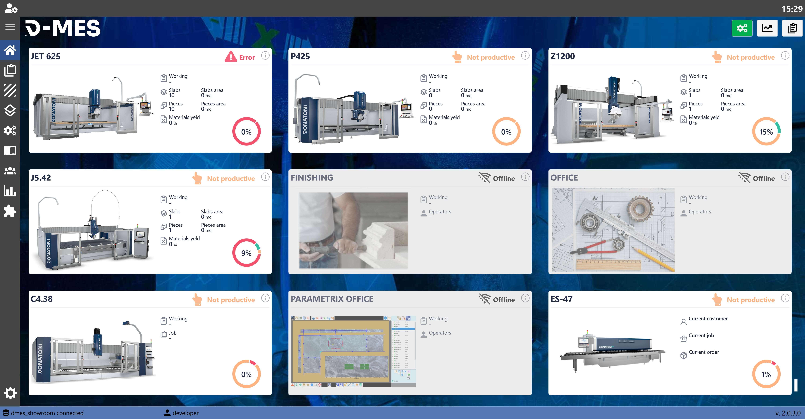
DMES TRACE
DONATONI DMES TRACE is the complete package for digital production management. It includes all basic functions and adds advanced tools for label customization and printing.
A solution designed to provide full production control and accurate, professional traceability of pieces, from project to shipment.
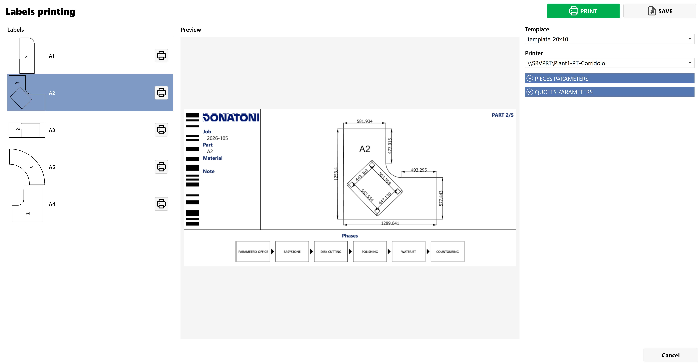
DMES MATRIX
DONATONI DMES MATRIX is an advanced platform that combines all DMES TRACE functions with a powerful operating module dedicated to slab management.
It is the ideal solution for those who require full control of the entire production cycle, from planning and piece labeling through to organizing the slabs to be processed.
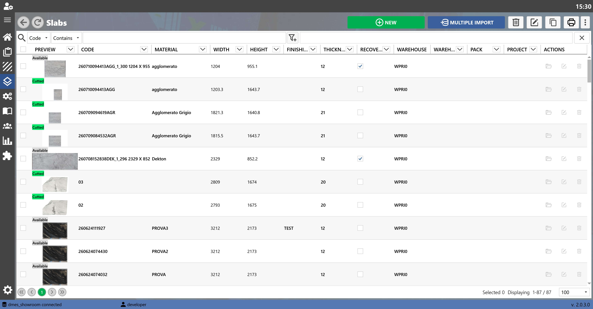
DMES PRO
DONATONI DMES PRO is the most complete and comprehensive package in the entire DMES suite. It combines all the functions of the MATRIX package in a single platform and enhances them with advanced tools for managing jobs, work cycles and the company's entire production process.
With DMES PRO, you are not limited to monitoring machines or managing slabs: you have an integrated system to plan, control, assign, track and document every stage of the work, from order receipt to delivery of the finished piece. It is designed for companies that want to digitalize and optimize every link in the production chain, increasing efficiency and improving customer service.

This MES software allows the main stages of slab processing to be managed and controlled. The operator can follow the process from the initial cutting stage through to the final finishing and polishing operations.

SIDE BAR
The side menu is located on the left and allows navigation between the different program pages.
BUTTONS
 | MENU |
HOME | |
 | PRODUCTION |
STATISTICS | |
TOOLS |
MACHINE CARD
This section summarizes production statistics and the machine's operating status in real time.

MACHINE STATES
 | OFFLINE STATUS |
PRODUCTIVE STATUS | |
NOT PRODUCTIVE STATUS | |
ERROR STATUS |
MACHINE STATISTICS CARD
The Machine Status and Statistics card provides a real-time summary of machine performance.
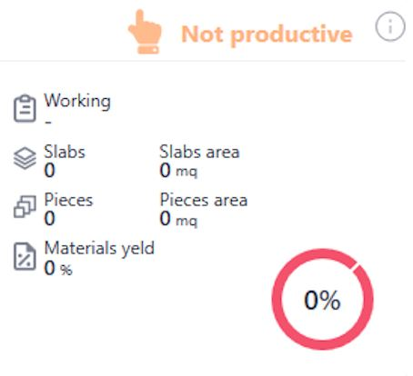
Doughnut chart | Provides immediate visual feedback showing the completion percentage of the current job. |
On the Home page, additional information about the selected machine can be viewed.

MACHINE INFORMATION
INFO PAGE
INFO |
After pressing the Info button, a screen similar to this one opens:
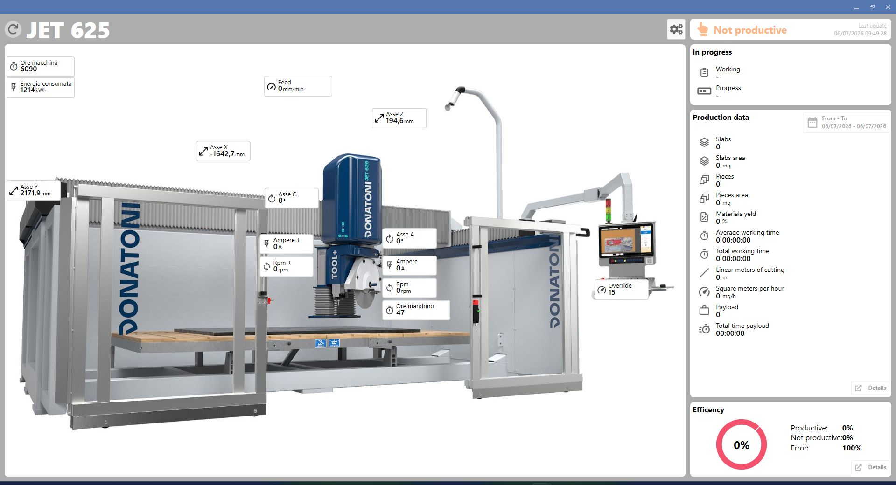
This page provides detailed information about the machine workings.
BUTTONS
 | DATE |
DETAILS | |
 | SETTINGS |
WORK STATISTICS
This section displays the machine's work statistics.
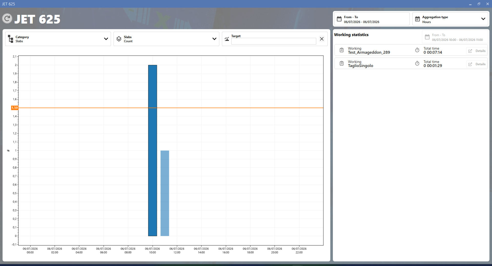
BUTTONS
 | CATEGORY |
SLABS | |
AGGREGATION |
WORK CYCLE STATISTICS
This section displays the machine's work cycle statistics.
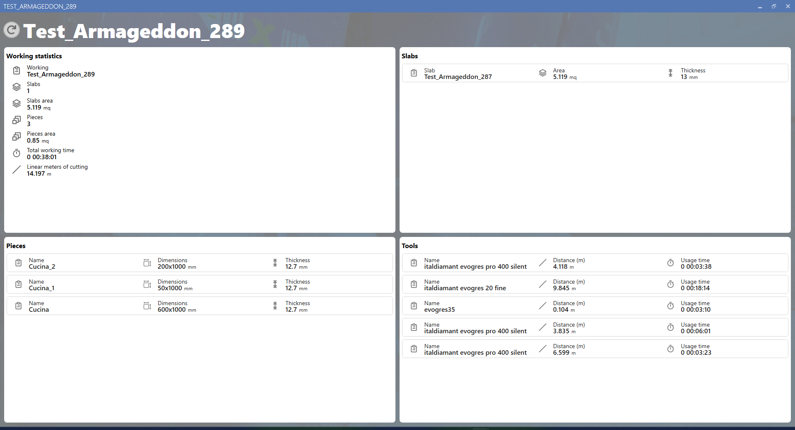
MACHINE EFFICIENCY STATISTICS
This screen provides a detailed analysis of machine efficiency and status, showing the breakdown of operating time between productive, non-productive and error periods over a selected time range.
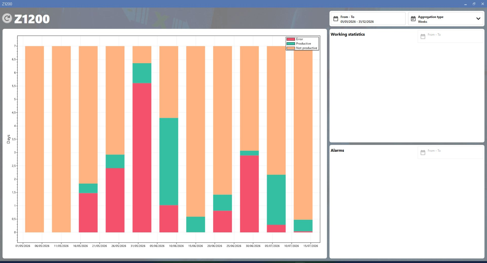
This page allows the production stages of files to be sent to the machine via the MES to be managed.
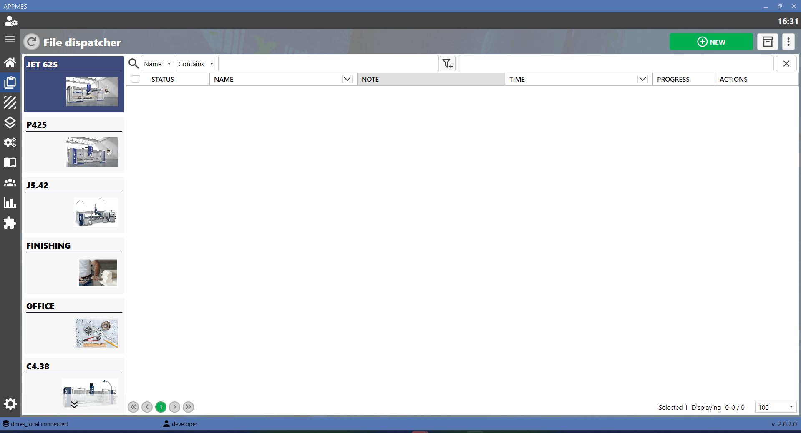
GUIDE
After adding a .dxf file using the New button, the file appears on the main screen, as shown in the image.
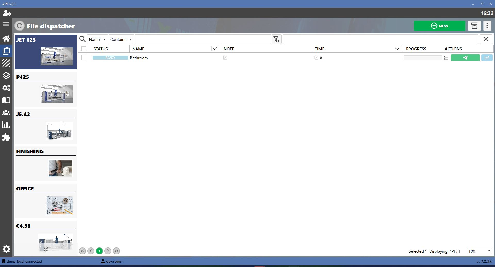
To send the file to the machine, click the Send button and confirm with OK in the window that opens. Then verify that the status changes from Ready to Sended.

BUTTONS
SEND | |
STATISTICS | |
 | NEW Adds a new .dxf file to the list. |
READY STATUS Indicates that the file is ready to be sent to production. | |
 | SENDED STATUS Indicates that the file has been successfully sent to the machine. |
This page displays statistics for workings performed by the machines connected to the MES.
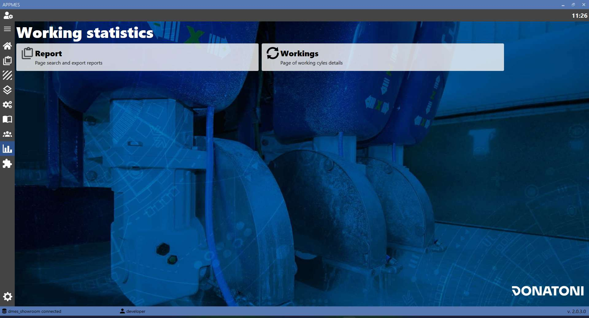
CATEGORIES
The main page provides two buttons for accessing the required statistics subpages.
REPORT | |
WORKING |
REPORT
This page displays the reports available for each working.
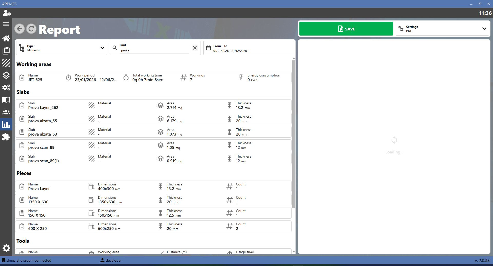
BUTTONS
TYPE | |
DATE | |
SAVE | |
SETTINGS | |
 | ZOOM IN |
ZOOM OUT | |
RESET ZOOM |
WORKING
This section displays statistics for the work cycles recorded by the MES.
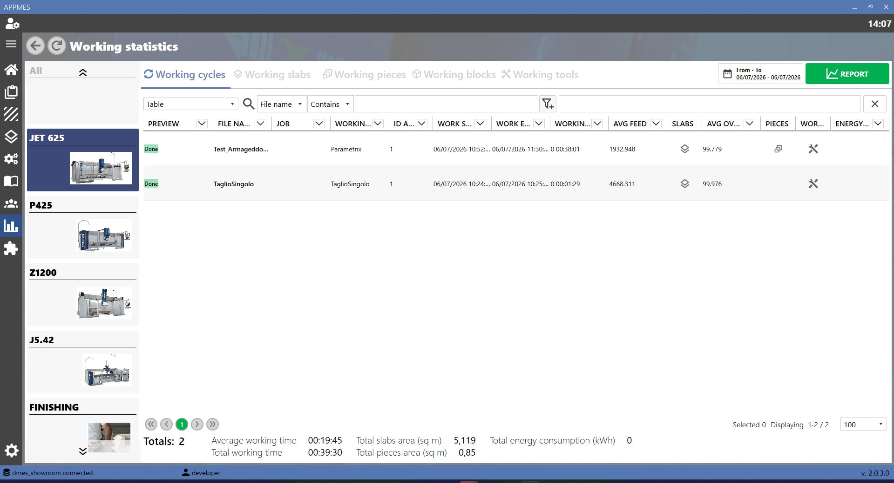
REPORT | |
DATE |
WORK CYCLES
This section displays the work cycle statistics of the selected machine.
SLAB WORKING
This section displays statistics for processed slabs.

PIECE WORKING
This section displays the characteristics of processed pieces.
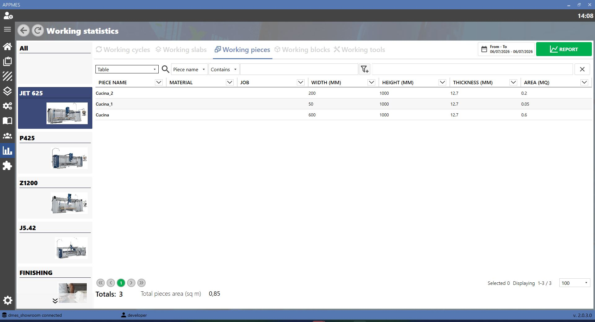
BLOCK WORKING
This section displays statistics for processed blocks.
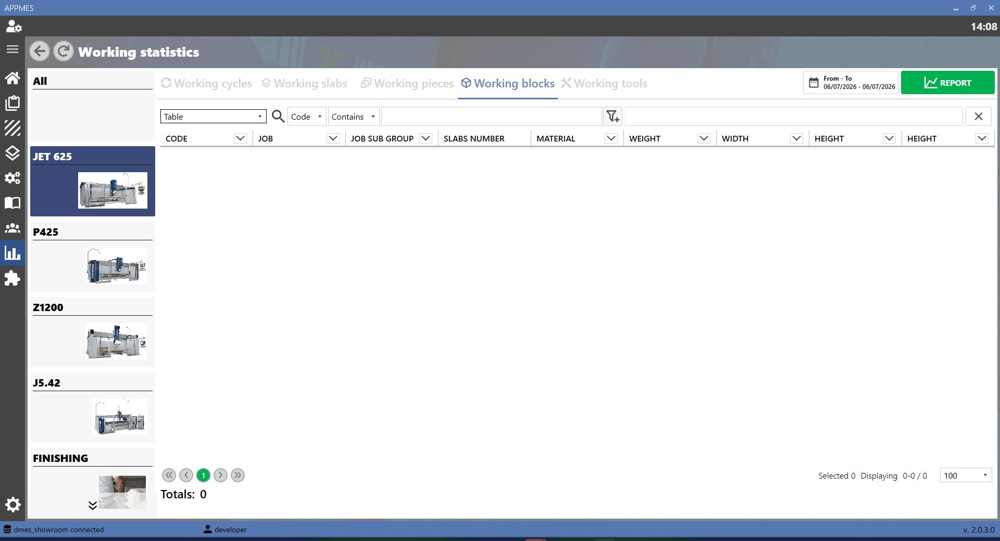
WORKING TOOLS
This section displays statistics for tools used in work cycles.
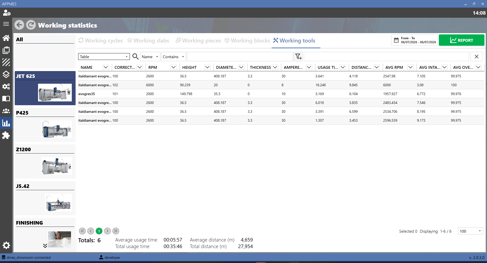
This MES page allows the tools used by the machines to be viewed and modified.

BUTTONS
TOOLS | |
EXTRACTIONS | |
ENUMERATIONS |
TOOLS
This section displays the data of the tools associated with the selected machine.

BUTTONS
These buttons allow the tool search to be filtered according to specific conditions.
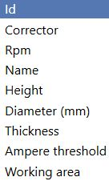 | CHARACTERISTICS Selects the characteristic to use for the filter, such as ID, corrector, RPM, name, height, diameter, thickness, current threshold or working area. |
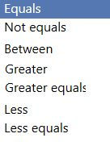 | CONDITIONS |
 | FILTERS |
REMOVE FILTERS |
EXTRACTIONS
This section allows data managed by the MES to be extracted from the server.
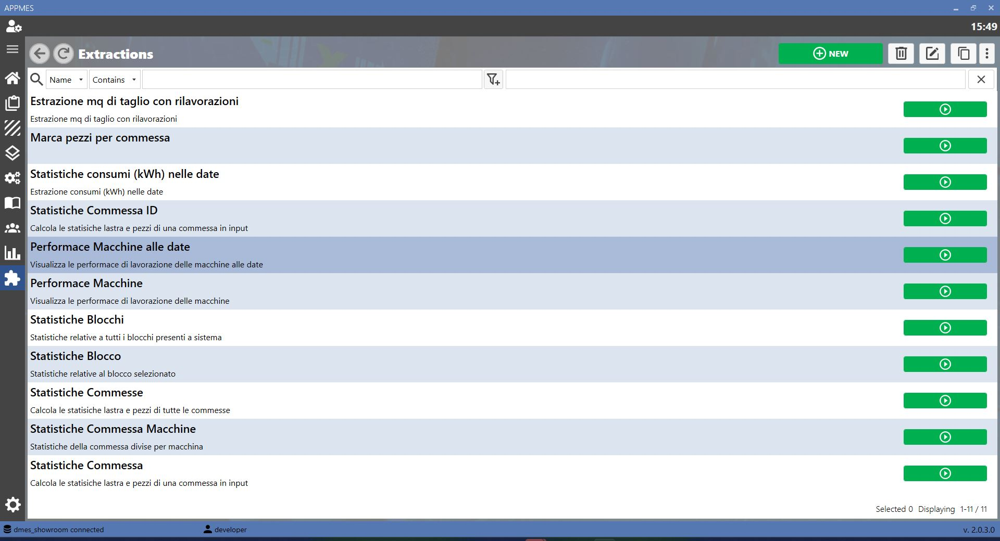
BUTTONS
RUN | |
CONFIRM | |
 | CANCEL |
EXTRACTION COMPLETED
When the extraction is complete, if the operation was successful, a page similar to this one opens.
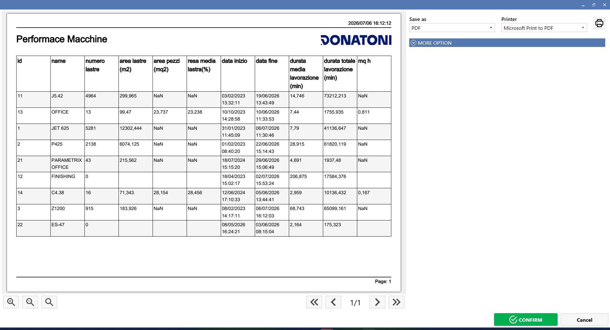
Clicking More options opens a panel where the font size, sheet format, page orientation and logo display can be changed.
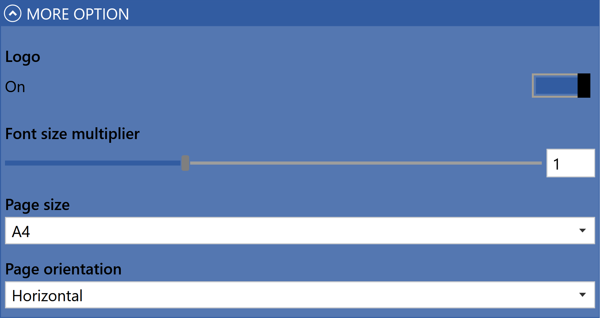
DMES TRACE makes it possible to track the processing stages of each piece.

To create a new working in this MES software, press the NEW button. A screen will open where the information required to register and manage the working can be entered.
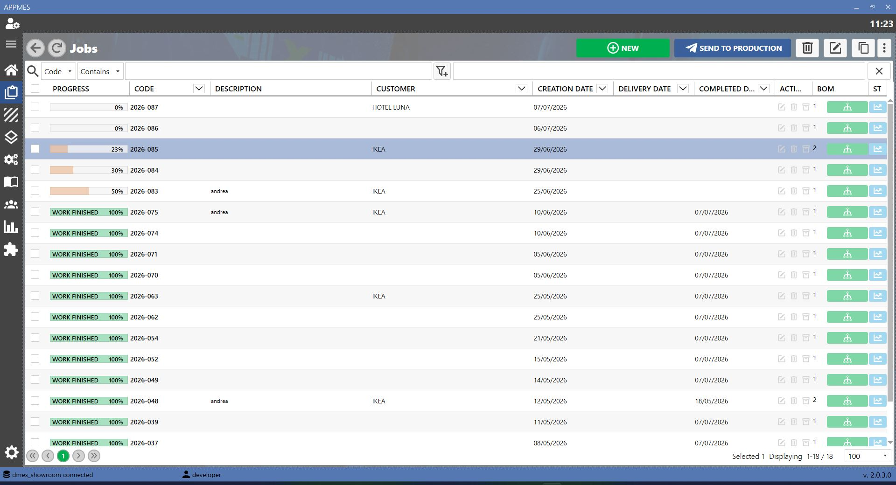
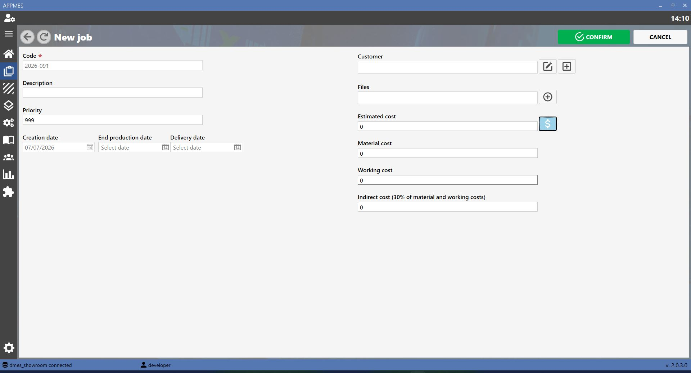
BUTTONS
 | ADD |
 | EDIT |
 | COPY |
 | DELETE |
 | SELECT CONTACT |
 | NEW CUSTOMER |
 | EXTRA COSTS |
STAGE MANAGEMENT | |
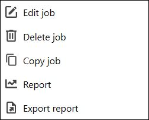 | OPTIONS MENU |
 | CREATION OPTIONS MENU |
This page allows all piece working stages to be managed within the MES. The MES is the software that tracks production progress, from creating or importing pieces through to label printing and sending to production.

BUTTONS
Import | |
 | Export |
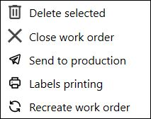 | Options menu |
 | Edit |
Print | |
 | Send |
WORKING STATES
Green | Indicates that the working stage has been completed. |
Light blue | Indicates that the working stage has not yet started. |
Yellow | Indicates that the working stage has been taken over and is being managed. |
PIECE IMPORT
To import pieces, click the Import button. A screen similar to the one shown below will open.
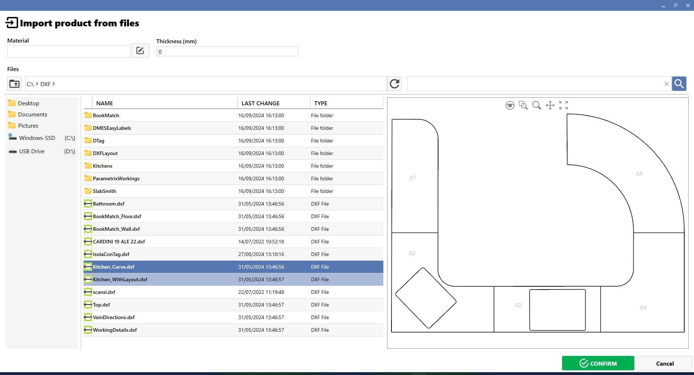
Press OK on the next screen. When complete, verify that all pieces have been correctly added to the working.
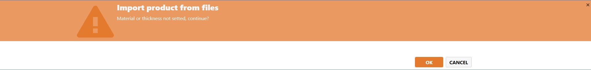

EXPORTING WORKING STATES
To export the states of a working, press the Export button. A screen similar to the one shown below will open, where the information to be exported can be selected or modified.

PRINT LABELS
To print a label for the entire working, press the Print button. A screen similar to the one shown below will open.
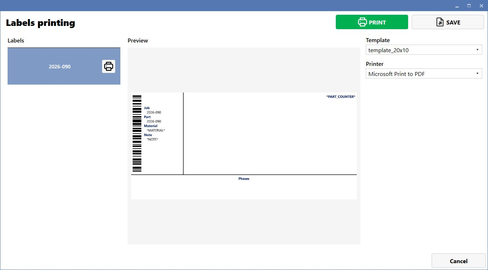
PRINT LABELS FOR A WORKING STAGE
To print a label for a single working stage, right-click the required stage and select Labels printing. A screen similar to the one shown below will open. Then select the piece for which the label is to be printed.

NEW PRODUCT
To add a new product to the working, click the three dots and select New product. A screen similar to the one shown below will open.

NEW PRODUCT BUTTONS
Add | |
Move up | |
 | Move down |
This page displays the main information about the working and the preview of the file .dxf imported. The file .dxf contains the technical drawing that the MES uses to support working management and control.
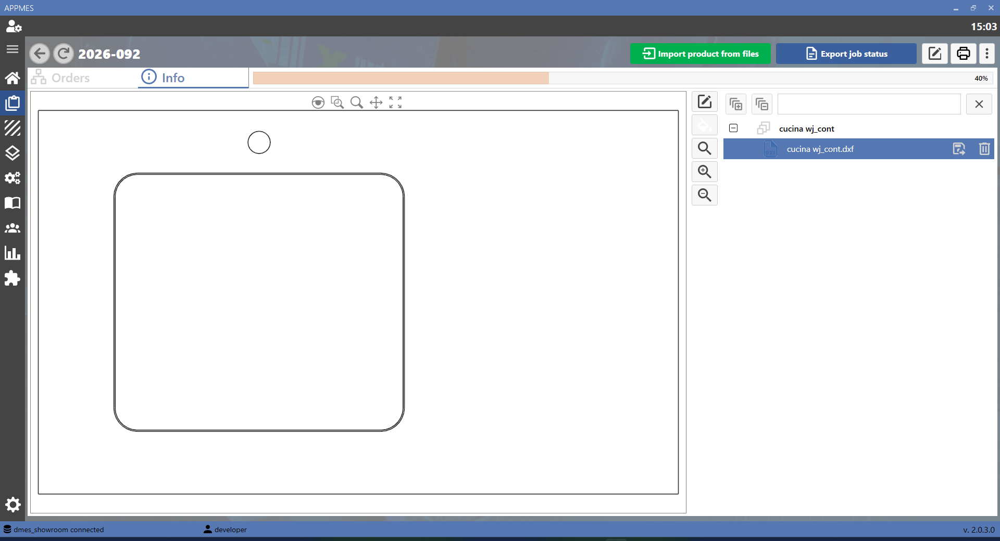
BUTTONS
Zoom in | |
Zoom out | |
 | Reset zoom |
Change background | |
-20260819-060407.png) | Edit preview |
To print a label for a single working stage, right-click the required stage and select Labels printing. A screen similar to the one shown below will open. Then select the piece for which the label is to be printed.
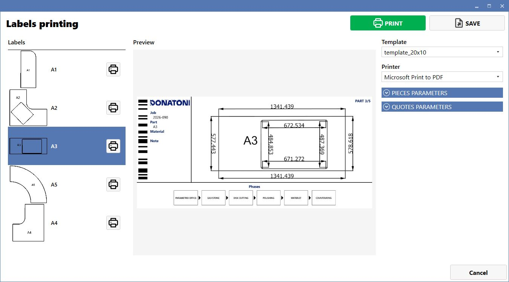
PIECES PARAMETERS
The PIECES PARAMETERS panel allows the graphics and display parameters of pieces and geometries on the working layout to be configured by adjusting distances, thicknesses, text and colors.
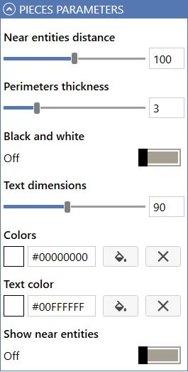
PIECES PARAMETERS OPTIONS
Nearby entity distance | Adjusts the minimum tolerance or proximity distance between the different entities or geometries on the work plane. |
Perimeter thickness | Sets the thickness of the lines defining the outlines and perimeters of the pieces displayed on screen. |
Black and White Mode | On/Off switch for enabling monochrome display of the graphical interface or drawing. |
Text size | Changes the character size for text labels and informative dimensions associated with the pieces. |
Piece color | Defines the color of the piece perimeter or fill using a hexadecimal code or graphical selector. |
Text color | Selects the color of the information text overlaid on the pieces (e.g. identifiers or measurements). |
Show nearby entities | Enables or disables visual highlighting of geometries or pieces located close to each other. |
QUOTES PARAMETERS
The QUOTES PARAMETERS panel allows the generation, style and positioning parameters of graphical dimensions within the working layout to be managed and configured.
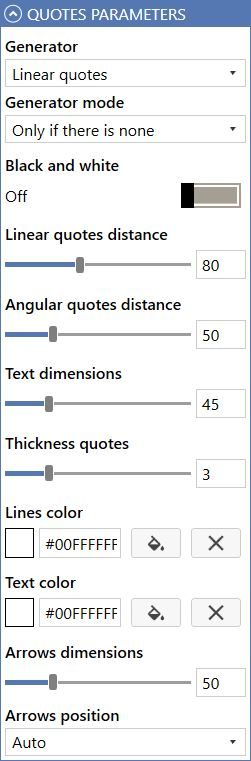
QUOTES PARAMETERS OPTIONS
Generator type | Drop-down menu for selecting the type of automatic dimensions to apply. |
Generation mode | Defines the dimension insertion logic. |
Black and White Mode | On/Off switch for forcing dimensions to be displayed in black and white instead of color. |
Angular dimension distance | Uses a slider to adjust the visual distance of the linear dimension lines from the piece profile. |
Angular dimension distance | Uses a slider to adjust the spacing and positioning of angle dimensions on the drawing. |
Text size | Sets the character size of numerical values and dimension text to ensure readability. |
Dimension line thickness | Changes the graphical thickness of the lines and strokes that make up the dimensioning. |
Line color | Selects the color of dimension and reference lines using a palette or hexadecimal color code. |
Text color | Defines the specific color for dimension text and numerical values. |
Arrow size | Adjusts the size of the arrows or end markers at the ends of the dimension lines. |
Arrow positioning | Drop-down menu for setting where the arrows are placed (e.g. automatically, inside or outside the dimension line). |
This MES page allows customer and supplier records to be managed. From here, the user can access the dedicated areas to create, view or update the main information.
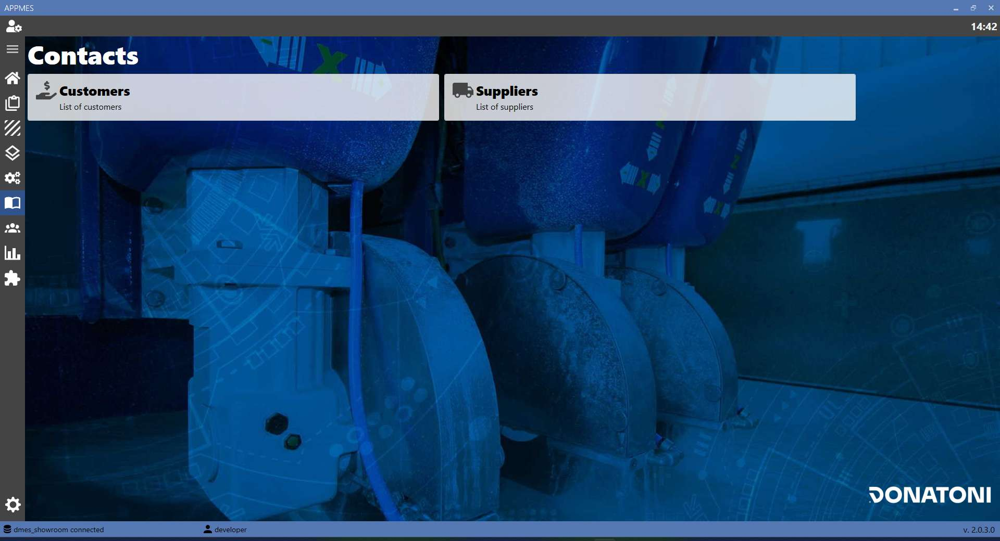
Buttons
Customers | |
Suppliers |
This MES page allows customer records to be managed. The user can create new customers, edit existing ones, copy them, delete them and associate a preview image.

BUTTONS
 | ADD |
-20260819-060407.png) | EDIT Updates the data of a customer already registered in the MES. |
 | COPY Duplicates an existing customer record, allowing a new customer to be created from existing data. |
DELETE Removes a customer record that is no longer required from the MES. | |
 | IMAGES Associates a preview image with the customer record during creation or editing. |
CREATING A NEW CUSTOMER
To create a new customer, click the ADD button. The MES opens a screen where the customer data can be entered.

This MES page allows supplier records to be managed. The user can create new suppliers, edit existing ones, copy them, delete them and associate a preview image.
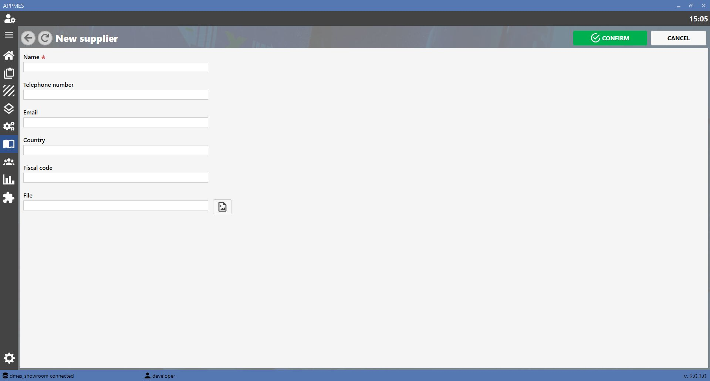
BUTTONS
ADD | |
-20260819-060407.png) | EDIT Updates the data of a supplier already registered in the MES. |
 | COPY Duplicates an existing supplier record, allowing a new supplier to be created from existing data. |
 | DELETE Removes a supplier record that is no longer required from the MES. |
IMAGES Associates a preview image with the supplier record during creation or editing. |
CREATING A NEW SUPPLIER
To create a new supplier, click the ADD button. The MES opens a screen where the supplier data can be entered.
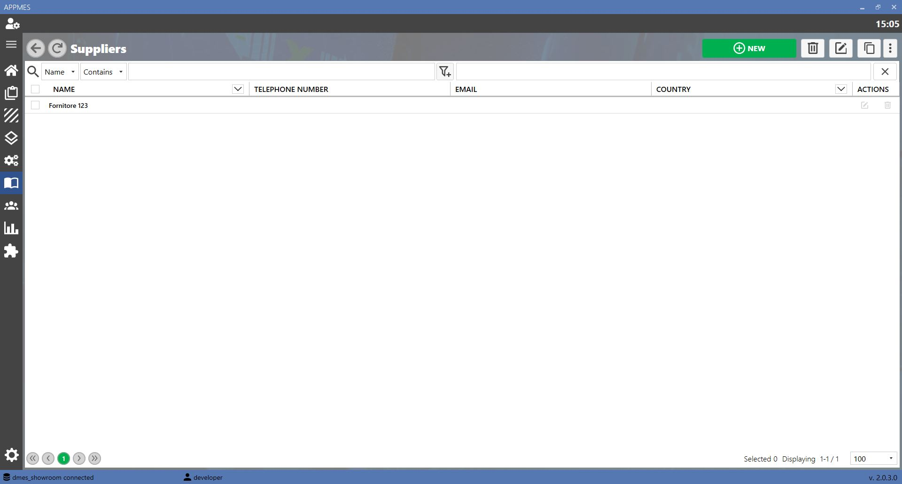
DMES MATRIX allows slabs and blocks to be managed.
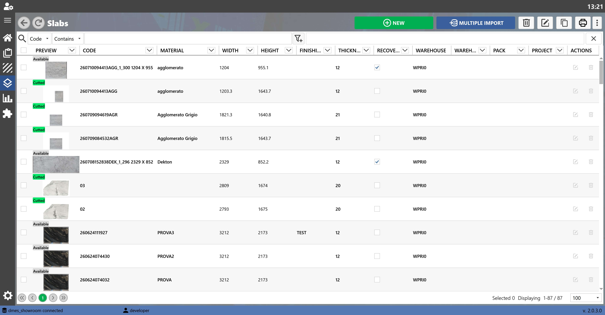
BUTTONS
MATERIAL CATEGORIES | |
MATERIALS | |
 | MATERIAL COLORS |
This MES page allows materials in the warehouse to be searched according to their category.
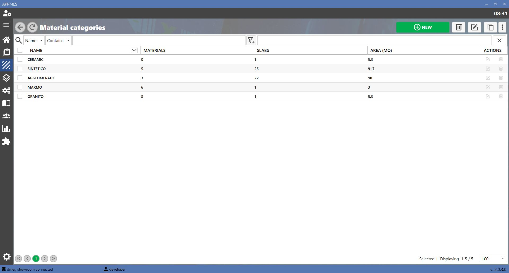
BUTTONS
 | ADD |
-20260819-060407.png) | EDIT |
 | COPY |
 | DELETE |
NEW CATEGORY
To add a new material category, click Add. A screen opens where a category can be created and associated with materials that have not yet been classified.


Questa pagina del MES permette di gestire i materiali presenti in magazzino. Per ogni materiale sono indicati categoria, dati principali e informazioni utili alla produzione.
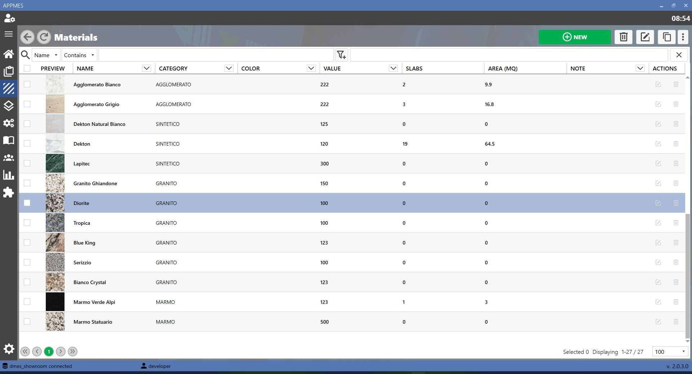
PULSANTI
 | AGGIUNGI |
-20260818-141810.png) | FILTRI |
CONFERMA | |
CANCELLA | |
IMMAGINE DI ANTEPRIMA |
AGGIUNTA DEL MATERIALE
Per aggiungere un nuovo materiale, clicca su Aggiungi. Si apre una schermata in cui inserire nome, codice, valore, note, peso specifico, categoria, colore e immagine di anteprima.

This MES page allows materials in the warehouse to be searched according to their associated color.
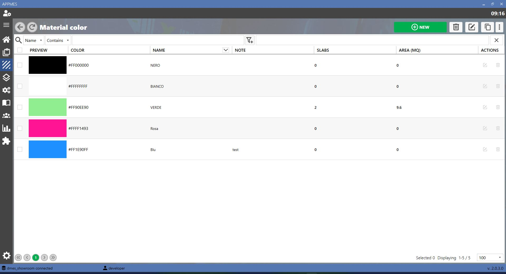
ADDING A NEW COLOR
To add a new color, click Add. A screen opens where the color name can be entered, a shade can be selected, including from the predefined colors, and any notes can be added.
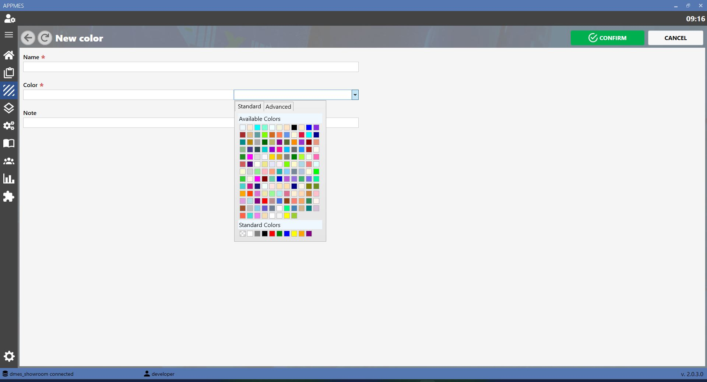
This page allows blocks and slabs to be viewed and searched.
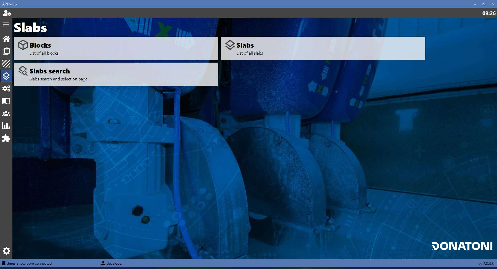
BUTTONS
BLOCKS | |
 | SLABS |
SLAB SEARCH |
This MES page allows the blocks in the warehouse, i.e. the materials available for production, to be managed.
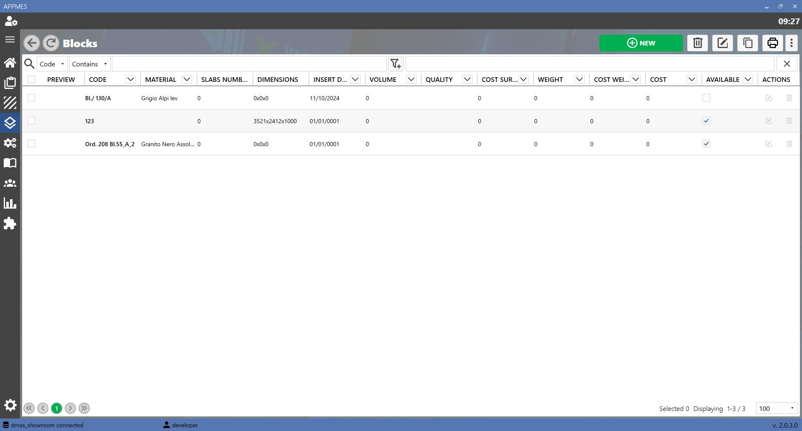
BUTTONS
ADD BUTTON | |
-20260819-060407.png) | EDIT BUTTON |
 | COPY BUTTON |
 | DELETE BUTTON |
PRINT LABEL BUTTON |
ADDING A NEW BLOCK
To add a new block, click Add. A screen opens where the block name, code, dimensions and other characteristics can be entered.

PRINT LABEL
To print a label for a block, click Print label. A screen opens where the template can be selected and the label can be printed or saved as a PDF.

This page allows the slabs in the MES system to be managed. A slab is a material that can be added, imported, assigned to a job and tracked through the various working stages.

BUTTONS
 | Add Button |
 | Multiple Import Button |
STATES
Cutted Status | Indicates that the slab has been cut. |
Available Status | Indicates that the slab is available and can be used for a working. |
In Programming Status | Indicates that the slab is being programmed for the working. |
Job Assigned Status | Indicates that the slab has been assigned to a job. |
Programmed Status | Indicates that the slab working has been planned. |
MULTIPLE IMPORT
To import multiple slabs, select the Multiple Import button. The MES opens a screen similar to the one shown below, from which multiple slabs can be loaded at the same time.
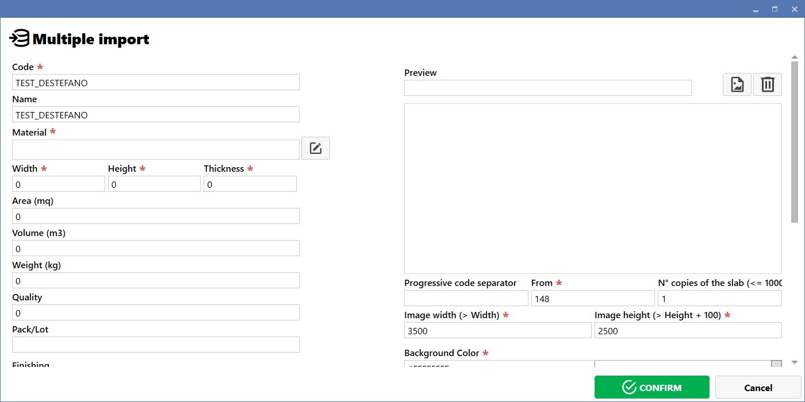
This page allows slabs to be searched.

BUTTONS
SEARCH | |
 | EXPORT |
EXPORT LABEL
To export the label as a PDF, press the Export button. A screen similar to this one will open, where the information to be exported and the format of the PDF can be modified.
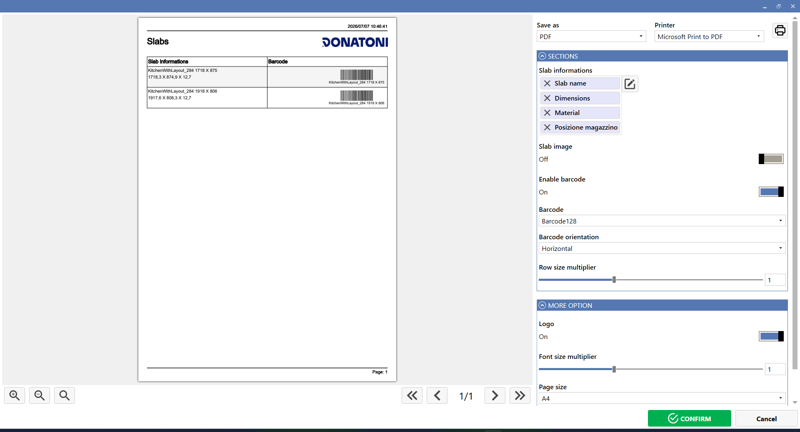
DMES PRO provides full control over all functions, such as workings, warehouse management and statistics display.
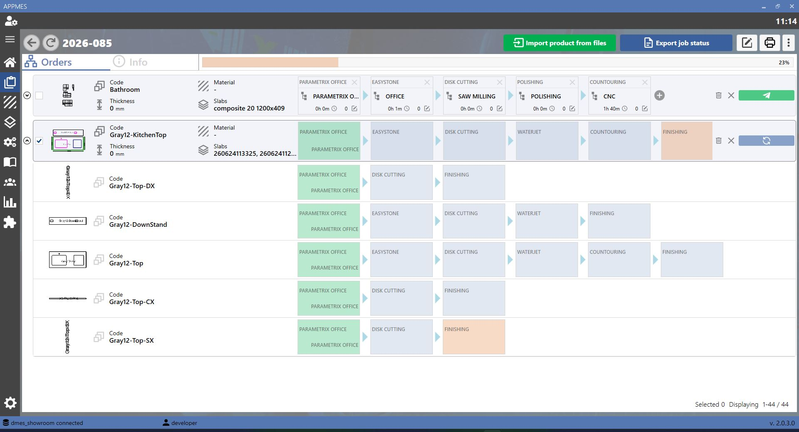
To access this section, refer to points 4.1 and 4.1.1 of the manual.

DMES PRO Buttons
This section describes the main DMES PRO MES buttons. These buttons allow the working data to be set before proceeding with the export.
Material | |
 | Slabs |
Thickness | |
 | Export |
Material Section
Pressing the Material button opens a screen similar to the one shown below. On this screen, the material associated with the working can be changed.

Slabs Section
Pressing the Slabs button opens a screen similar to the one shown below. On this screen, the slab to be processed can be selected.

Thickness Section
Pressing the Thickness button opens a screen similar to the one shown below. On this screen, the thickness of the slab or material being processed can be specified.
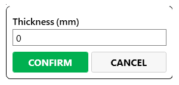
Working Export
To export the working, click the Export button. A screen similar to the one shown below opens. From this screen, the information to be exported can be modified and the export file settings can be configured.

This MES page allows users, user groups, activities and activities in progress to be managed. These functions are used to organize who can use the system, which groups have access to the various areas, and which operating activities must be configured or monitored during work.
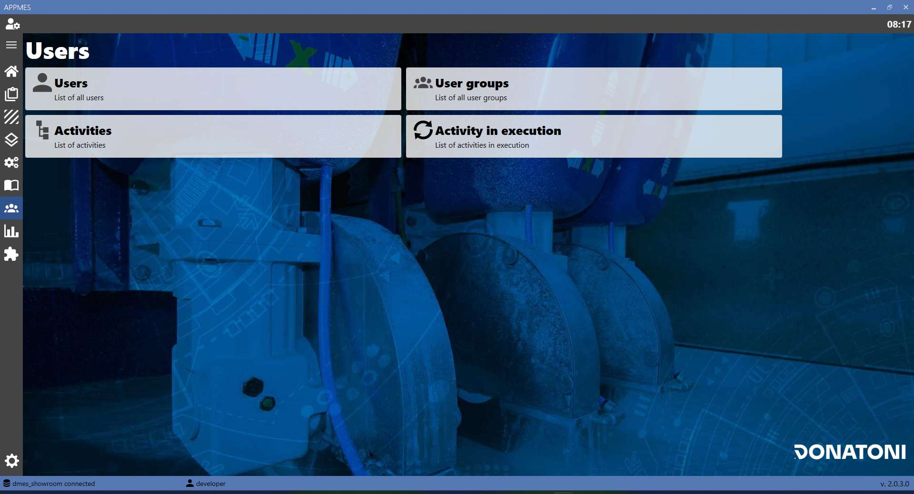
Buttons
Users | |
 | User Groups |
 | Activities |
 | Activities in progress |
This page allows MES users to be managed. A user is a person authorized to access the system, such as an operator, supervisor or production worker.

BUTTONS
 | ADD |
-20260819-060407.png) | EDIT |
 | COPY |
 | DELETE |
 | PRINT |
CREATING A NEW USER
To create a new user, press the ADD button. The MES will open a data entry screen similar to the one shown below. Complete the required fields and save the information.
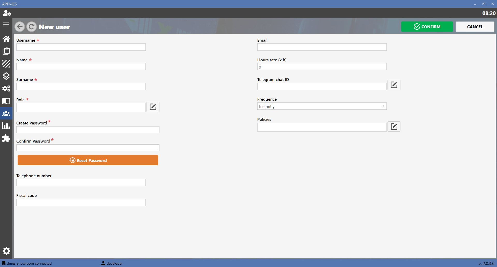
PRINT LABEL
To print a user's label, press the PRINT button. The MES will open a screen similar to the one shown below. Select the user whose label is to be printed and confirm printing.

This page allows the MES user groups to be managed. A user group brings together multiple users with the same functions or permissions, simplifying access and activity management in the system.

BUTTONS
 | ADD |
-20260819-060407.png) | EDIT |
 | COPY |
 | DELETE |
CREATING A NEW USER GROUP
To create a new user group, press the ADD button. A screen similar to the one shown below will open. Enter the required information, such as the group name and any permissions, then save the configuration.

This page allows MES activities to be managed. An activity is an operation or work stage that must be performed, checked or recorded during the production process.
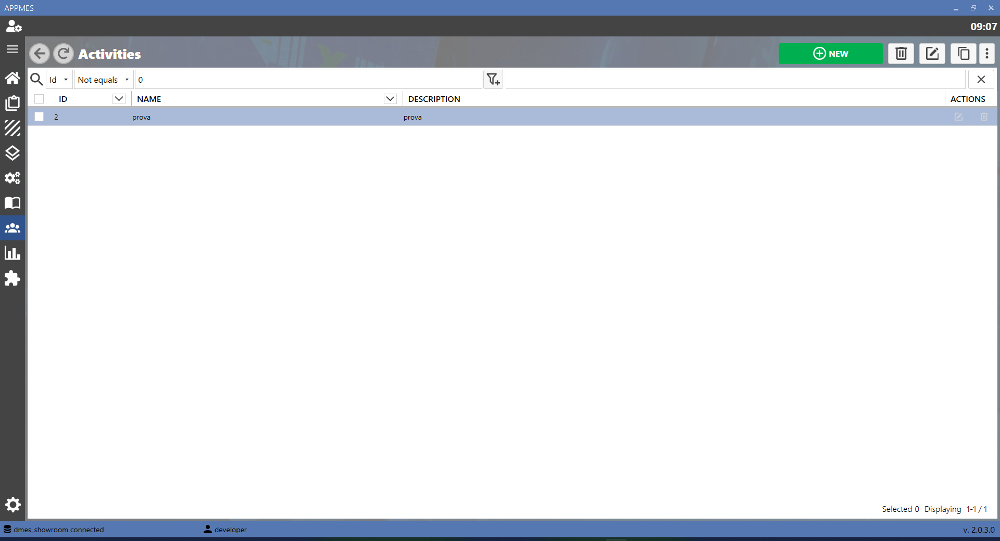
BUTTONS
 | ADD |
-20260819-060407.png) | EDIT |
 | COPY |
 | DELETE |
CREATING A NEW ACTIVITY
To create a new activity, press the ADD button. A screen similar to the one shown below will open, where the required information can be entered and the new activity can be saved in the MES.

This page allows activities in progress in the MES to be managed. An activity in progress is a work stage that has already started in production: it can be started, paused, resumed or completed according to the actual status of the production process.
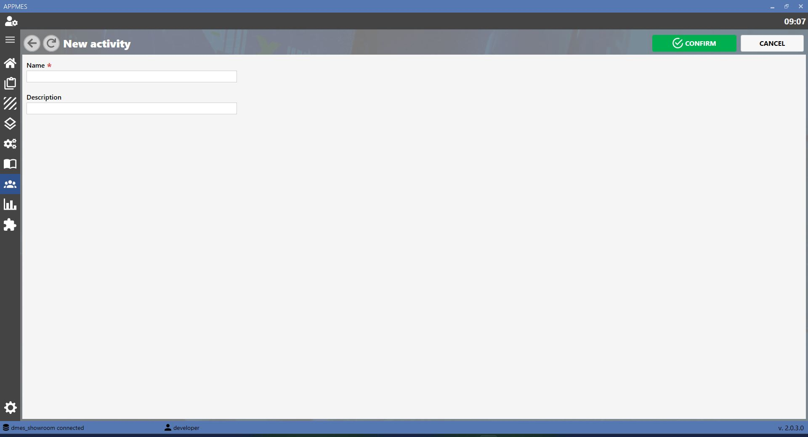
BUTTONS
 | ADD |
EDIT | |
 | COPY |
 | DELETE |
 | PLAY |
CREATING A NEW ACTIVITY IN PROGRESS
To create a new activity in progress, press the ADD button or select the corresponding item from the menu. A screen similar to the one shown below will open, where the required information can be entered and creation of the activity can be confirmed.
STARTING AN ACTIVITY
To start an activity, select the required activity and press the PLAY button. When the confirmation window appears, press OK. From this point, the activity is shown as started in the MES.
PAUSING AN ACTIVITY
To pause an activity, select the required activity and press the PAUSE button. When the confirmation window appears, press OK. The activity remains recorded in the MES but is temporarily suspended.
COMPLETING AN ACTIVITY
To mark an activity as completed, select the required activity and press the completion button. When the confirmation window appears, press OK. After confirmation, the MES records the activity as completed.
This MES page allows production to be monitored, users to be managed and completed activities to be viewed. The MES is the software used to track and organize production operations in a simple and controlled manner.
BUTTONS
PRODUCTION | |
USERS | |
ACTIVITIES |
This page allows the production stages to be managed in the MES. The MES is the software used to track and record production activities, assign operators and monitor work progress in a simple and organized manner.

Starting a production stage
To start a production stage, press the Play button on the required stage. In the screen that opens, select the user who will perform the work and press the start button to confirm.
Starting an activity
To start an activity, go to the WORKINGS section and select ACTIVITIES at the top right. A screen opens where the user and the activity to be performed can be specified.

This page displays a complete list of users and the tasks they are currently performing.
BUTTONS
 | PAUSE |
This page allows the different user activities to be viewed and managed.
BUTTONS
PLAY | |
 | PAUSE |
 | END |
This page allows the MES settings to be configured. The options are organized by functional area, making it easier to find and modify the required parameters.

BUTTONS
User | |
Application | |
Graphics | |
Print labels | |
 | Content |
Machine | |
 | Piece import |
 | Database |
REST | |
All settings |